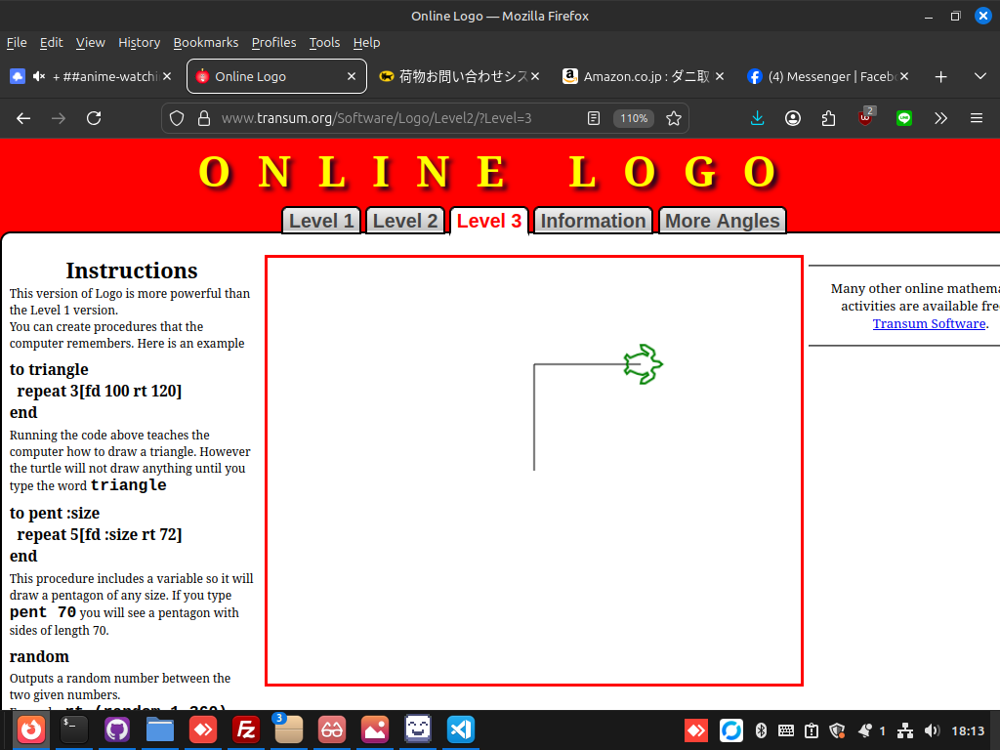

<pre>
jedesa> ya!
jedesa: hehe, amigojapan-sensei
amgigojapan: jedesa: hey so first I will link you to an Online LOGO programming langauge ok?
<a href="https://www.transum.org/Software/Logo/Level2/?Level=3" target="_blank">Online LOGO programming langauge</a>
jedesa: ok
jedesa: yooshi, I'm so fired up
amgigojapan: hey Haniibooru and jedesa
amgigojapan: we are startign at level 3
jedesa: Cool
jedesa: I'm in
amgigojapan: ok, everyone there?
amgigojapan: you there Haniibooru ?
hanibooru: Huh
hanibooru: Am I going to class now
amgigojapan: yes Haniibooru
hanibooru: good evening sensei amigojapan
amgigojapan: good evening students,take your seats, bow and say rei, to the class :)
amgigojapan: you know what rei is?
jedesa: ...
jedesa: :D
amgigojapan: doing rei , is bowing, and saying "yoroshiku onegai shimasu" to the whole class :)
amgigojapan: ok are we ready to begin?
jedesa: I'm good to go
amgigojapan: Haniibooru: did you join the web page?
hanibooru: Yes, I'm here! I see a turtle!
hanibooru: Kame!!
amgigojapan: ok, Lesson 1, makign the turtle move
amgigojapan: try fd 100 then click on run
jedesa: forward?
amgigojapan: yes forward is fd in logo
jedesa: the turtle has moved
amgigojapan: 100 means 100 pixels
hanibooru: The turtle has moved north by about a knuckle's length.
amgigojapan: good job Haniibooru , thats what I wanted
amgigojapan: you with us jedesa ?
jedesa: Yeah
amgigojapan: ok, lesson 2, turning the turtle
amgigojapan: there are two commands for turning the turtle
amgigojapan: rt which is right turn and lt which is left turn
amgigojapan: then you give how many degrees you want it to turn, in this lesson we will only use 90 degrees
amgigojapan: so try rt 90 before fd 100
amgigojapan: one line up
hanibooru: Help, I typed rt 360 and nothing had happened
hanibooru: Haha, sorry. I'll stop being silly
amgigojapan: your screen should look like this: 

jedesa: I see
hanibooru: The turtle has now rotated to the right by 90 degrees and gone right the same amount as it had gone up.
jedesa: I have made the turtle moved around and turning
amgigojapan: nice good work students!
hanibooru: :D
amgigojapan: excersize 1, make a square,in the web page press ctrl+r to refresh the screen, and then make a square
amgigojapan: send screenshot when done
hanibooru: Sir yes sir!
amgigojapan: :)
jedesa: what's for screenshot?
jedesa: umm
amgigojapan: jedesa: I think the printscreen key should work for taking screenshot, then upload it using the site called x0.at
jedesa: Name: jedesa https://x0.at/dWV2.png
(note:simillar image to above)
jedesa: :D
amgigojapan: let me se
amgigojapan: see
hanibooru: https://x0.at/Ljmp.png
(note:simillar image to above)
amgigojapan: very good jedesa
amgigojapan: let me see Haniibooru
amgigojapan: very good Haniibooru , tho jedesa made a program, you gave repl commands
hanibooru: Oh I see
amgigojapan: Haniibooru: you can make a program by pressing shift+enter instead of just enter
hanibooru: Oooooh
hanibooru: Let me try again!
amgigojapan: ok
jedesa: yup I just repeat
amgigojapan: jedesa , show me
amgigojapan: jedesa: do you mean the repeat loop? UI have not taught that yet
jedesa: I mean I also look at instructions..
hanibooru: https://x0.at/4cmr.png Hehe, I am proud to say I did the lazy thing and copy pasted it a total of twice to do this. :)
jedesa: https://x0.at/oS5Y.png
jedesa: Yaay nice
amgigojapan: very nice
amgigojapan: next lesson, loops
amgigojapan: the most simple loop in LOGO is called "repeat
amgigojapan: "repeat"
amgigojapan: jedesa: Haniibooru , first refresh the browser with ctrl+r then type the following inot he program box repeat 4 [fd 100 rt 90] then hit run
hanibooru: ah, so repeat is like... a function!
amgigojapan: Haniibooru: , no, it is a loop
hanibooru: It is a loop
amgigojapan: Haniibooru: we will see functions next
jedesa: The turtle has moved and draw a square
amgigojapan: yes jedesa , Haniibooru , it repeats those instructions inside [] 4 times, making a square
hanibooru: I see, I've gotten the same result
amgigojapan: everyone with me now?
jedesa: Yes
hanibooru: Yes
amgigojapan: ok, next lesson
amgigojapan: lesson 4 functions
amgigojapan: refresh the browser and run the following program
to square
  repeat 4 [fd 100 rt 90]
end

square
hanibooru: Did you use tab to indent line 2?
amgigojapan: yes Haniibooru
hanibooru: Is the syntax for sake of neatness or absolutely necessary?
amgigojapan: for the sake of neatness
hanibooru: I see :)
hanibooru: Thank you
amgigojapan: in LOGO, in python it is absolutely necessary
amgigojapan: no problem
amgigojapan: let me know when you are done
hanibooru: The function works as expected, another square was made upon calling the function(square)
amgigojapan: yes exactly Haniibooru
amgigojapan: now let me delineate what each word means
jedesa: wow the turtle have created some kind of flower!
to functio_name
    function_body
end

function_call
jedesa: by means of adding another repeat and turns
amgigojapan: jedesa: yeah, but wait, we will get there, you can send a screenshot if you want
hanibooru: jedesa is a fast learner :)
jedesa: https://x0.at/ZqPw.png
amgigojapan: yeah good job jedesa !
amgigojapan: jedesa: that is called a "fractal image"
amgigojapan: its quite useful
amgigojapan: did you guys see the names of each part of a function?
jedesa: hehe thanks Haniibooru
jedesa: Yup amigojapan
hanibooru: Hm, yes. I understand the syntax. functioN_name is the name of what we call the function, function_body is what the function does, and function_call is calling upon the function to what we specified it to do :)
amgigojapan: a funCtion is really something we use so that we don't need to repeat code over and over, we can have many function calls, and just one function definition, reducing the amount of code we need to write to do the same thing
amgigojapan: :) exactly Haniibooru
hanibooru: Oooh, understanding this, I managed to make two squares, one on top of the other.
hanibooru: https://x0.at/Is5Z.png
amgigojapan: now, lets try using several function calls, I want the same function definition, but this time, something like:
to square
  repeat 4[fd 100 rt 90]
end
square
fd 100
square
hanibooru: Oh haha I did exactly that just now hehe
jedesa: great
amgigojapan: Haniibooru: fantatsic, you predicted the next lesson :)
amgigojapan: jedesa: are you with us up to now?
Hanibooru: Hm, is the function square already implied to exist? I noticed that I can just type square and one will be made.
amgigojapan: Haniibooru: it is probably just above the code I thinkk let me tyr]
jedesa: Yeah
jedesa: umm I usually also don't say much when class in session .-.
amgigojapan: ah Haniibooru , godo discovery, it seems to already be implemented, I did not know
hanibooru: within line one I can type square after a refresh, and a square will be made anyhow, even if the function is not already specified
amgigojapan: yeah Haniibooru , it seems it is predefined
— amigojapan did not know
hanibooru: Ah, I figured it out.
amgigojapan: ok lext lesson, lesson 5, parameters
jedesa: okay
hanibooru: If you create a function, you may call upon it again even if it is cleared. I made a function(line) with just [fd 100] and even after a refresh, calling on it will create one. Calling upon function(line) before specifying it does not create one :P
amgigojapan: interestign Haniibooru , I did not know that, but dont coutn on the funciton preexisting
hanibooru: I understand. :)
amgigojapan: ok, next try the following program:
to square :size
  repeat 4 [fd :size rt 90]
end

square 50
square 100
square 200
jedesa: Turtle created square in increasingly bigger size
hanibooru: There are now three squares, with the others being larger than the other before it by a factor of two.
amgigojapan: is it clear why?
amgigojapan: the size is a "variable" which is being sent to the function as a "parameter" which is then takign place in the fucntion of the number that was 100 before, now it is 50 100 and 200
jedesa: Because we specified different value for each function :D
amgigojapan: yes jedesa
amgigojapan: jedesa: for each fucntion call, yes
hanibooru: Ah!
jedesa: oh right, I mean the call
amgigojapan: good good jedesa :)
amgigojapan: now lets learn some more command for LOGO
amgigojapan: refresh the browser and try this:
pendown
fd 10
penup
fd 10
pendown
fd 10
pendown
fd 10
penup
fd 10
pendown
fd 10
amgigojapan: there
amgigojapan: is it clear what it is doing?
jedesa: dashes! isn't it?
hanibooru: Let me try now
amgigojapan: yes jedesa , any questions?
jedesa: Not yet, amigojapan-sensei
hanibooru: I see three vertical lines, with a space between each
hanibooru: https://x0.at/EVDV.png
amgigojapan: yeah so as you see, when you do penup, the turtle stops drawing lines whne it moves, then pendaown activates that again
amgigojapan: let me see Haniibooru
amgigojapan: yeah Haniibooru
amgigojapan: so everythign is clear?
hanibooru: I understand, the turtle may move without drawing.
jedesa: Yeah
amgigojapan: ok ok
amgigojapan: excersize 2
amgigojapan: draw this kanji 一
amgigojapan: and show me a screenshot
jedesa: okay here goes
jedesa: https://x0.at/F5Nd.png
— amigojapan clicks
amgigojapan: perfect jedesa !
jedesa: thank you
jedesa: okay
amgigojapan: Haniibooru: any luck?
hanibooru: My turtle is disappearing, please give me one moment
hanibooru: https://x0.at/Mlp3.png
hanibooru: the turtle does not like my keyboard shortcuts, haha
jedesa: what happens Haniibooru ? :3
hanibooru: When I tab back to firefox the turtle sometimes disappears and I have to refresh the page and restart. :P
jedesa: the little turtle would like to play with you
amgigojapan: very good Haniibooru
hanibooru: I could teach the turtle how to play with hanafuda cards
amgigojapan: ok, excersize 3, write this kanji 三
amgigojapan: jedesa: it is the number 3 in kanji pronouces "san"
amgigojapan: jedesa: just three horizontal lines
— jedesa trying ..
amgigojapan: its ok jedesa , take your time
amgigojapan: Haniibooru: ah ok, extra points for using functions!
amgigojapan: ah goctha
hanibooru: Yay!
hanibooru: making the function down was not very easy, I had to do a lot of testing
amgigojapan: I see
jedesa: finished
jedesa: https://x0.at/mV8P.png
amgigojapan: let me see jedesa
jedesa: I but I didn't use function
hanibooru: Maybe if there was a way for me to index the function(ichi) to always face east, it would be a lot easier. :P
amgigojapan: good jedesa , but I would like Haniibooru to share his code with us so you can see what he did
amgigojapan: Haniibooru: can you paste your code please?
hanibooru: Sure,
hanibooru: 
to ichi
  rt 90 fd 50
end

to down
  rt 180 fd 50 lt 90 penup fd 25 rt 180 pendown
end

ichi
down
ichi
down
ichi
amgigojapan: fantastic Haniibooru !
amgigojapan: jedesa: do you get his code?
jedesa: I create one with function too
jedesa: https://x0.at/xfPj.png
amgigojapan: Haniibooru: by the way, did you know you can put newlines inside funciton bodies?
amgigojapan: let me see jedesa
jedesa: Cool Haniibooru !
hanibooru: amigojapan: Now I know! :D
amgigojapan: :)
amgigojapan: ok jedesa Haniibooru , you guys are great students!
hanibooru: Yay!
amgigojapan: ok last excersize of the day!
amgigojapan: make this using functions: 品 eventho the kanji are not technically made of squares, you may use equalateral squares
amgigojapan: this will be the last thing for today
hanibooru: Only functions?
amgigojapan: Haniibooru: I mean, like use the suqre funtions at least
jedesa: we create square with our function?
amgigojapan: yes jedesa
amgigojapan: by the way, this kanji in Japanese is called shina
amgigojapan: it means "goods"
— jedesa thinking ..
amgigojapan: its ok jedesa , take your time
amgigojapan: its last for today
amgigojapan: jedesa: Haniibooru . one hint, it may be easier to draw the lines between one object and another, and later add penup so that they become invisible
amgigojapan: sorry I forgot to say that earlier
hanibooru: hm I see
hanibooru: Hm, I'm going to have to do a bunch of mental gymnastics here.
amgigojapan: I see Haniibooru , I am sorry if the last excersize was too hard
— jedesa needs water cooling
amgigojapan: sorry jedesa :(
jedesa: no amigojapan
jedesa: I'm working on it
amgigojapan: ok ok
jedesa: please wait a little
amgigojapan: ok
amgigojapan: no problem
hanibooru: No, it's not too difficult... I think. I just need to figure out how to be lazy and do it with the least amount of functions haha
amgigojapan: ok
hanibooru: Ideally I can just type repeat 3[square shina] and then it would be there. :P
hanibooru: I'm so close
amgigojapan: its fine Haniibooru , take your time
jedesa: It could be better
jedesa: https://x0.at/hYzE.png
— amigojapan clicks
amgigojapan: jedesa: its fine, dont worry, now lest wait for Haniibooru
jedesa: The idea was create a triangle and at each point draw square
amgigojapan: jedesa: what do you think of LOGO, it is good right?
hanibooru: Haha, so far I've gotten this far.
hanibooru: https://pastebin.com/dWFYcnS3
amgigojapan: lets see Haniibooru
hanibooru: Please paste that code in.
hanibooru: Now that you mention triangles, I think I can readjust this
jedesa: yeah amigojapan, now I feel like I should also brush up maths again
amgigojapan: Haniibooru: a bit disfigured
amgigojapan: Haniibooru: and jedesa , how about if we make perfecting it for homework?
hanibooru: amigojapan: Haha, just a little. I'm trying to get that third square to line up.
amgigojapan: ok Haniibooru
jedesa: I don't mind .. I could use some excercise..
amgigojapan: ok jedesa
hanibooru: I accept the homework
amgigojapan: ok, class is over :) stand! say rei!
— jedesa rises and bows :)
amgigojapan: Haniibooru: jedesa , can I use your names in a documents I want to make about teaching programming in LOGO?
hanibooru: You may
amgigojapan: I will just copy and paste this all inot a document
jedesa: jedesa would be happy
amgigojapan: thanks Haniibooru !
amgigojapan: thanks jedesa !
— Haniibooru bows
hanibooru: yoroshiku onegai shimasu
— amigojapan bows yoroshiku onegai shimasu!
hanibooru: Haha, I would do this for every beginning of Aikido practice too.

later the same day they gave me hteir homework:

;jedesa's shina program 　品
to ms
penup
fd 25
seth 270
fd 25
seth 0
pendown
repeat 4[rt 90 fd 80]
penup
rt 90
fd 25
rt 90
fd 25
seth 0
end

penup setpos[0 50] ms
penup setpos[-50 -50] ms
penup setpos[50 -50] ms


;Haniibooru's version of shina　品
to centersquare
penup
lt 135
fd 21
rt 135
pendown
repeat 4[
fd 30 rt 90
]
penup
rt 45
fd 21
lt 45
end

centersquare lt 154 fd 34 rt 154
centersquare rt 90 fd 31 lt 90
centersquare

;amigojapan's version of shina　品
home;send the turtle to the center fo the screen
cs;clear screen
to sq :s
repeat 4[fd :s rt 90]
end
pu
setx -35;sets the x coordinate to 35
pd
sq 30
pu
setx 0
pd
sq 30
pu;pen up
fd 35
setx -17
pd; pen down
sq 30
ht; hide turtle
</pre>